Puzzle by DD Liu and Josh Alman
| Xrayfish is all about the song Rock Lobster by the B-52s, as hinted by the lyric "earlobe fell in the deep", the sick bassline, and the many animals in the video which are mentioned in the song. | 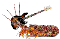 |
| You need to use your earlobe to identify the animals in the music, as well as the animals in the video, in order to solve the puzzle. |
| At one point in the song, the singers imitate the noises of a bunch of sea creatures. The eight sea creature noises in the puzzle's music appear in this section, and so we can identify what eight creatures are making those noises! The noises in the puzzle music alternate between left and right speaker to be more distinguishable. The eight creatures we identify appear in order below. |
| We can then count how many times each of these creatures appears in the video. Index the number of that sea creature into its name in the song, put in the order of the puzzle music, to find the puzzle answer. |
|
Answer: 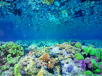 |
| IMAGE | NAME | COUNT | LETTER |
|---|---|---|---|
|
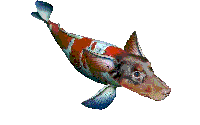
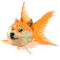
|
DOGFISH | 2 | O |
| 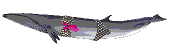 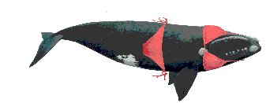 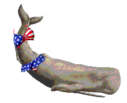 |
BIKINI WHALE A 2-piece swimsuit whale. |
3 | K |
| 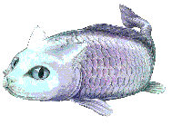 |
CATFISH Somehow always positions itself inconveniently. |
1 | C |
|
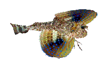
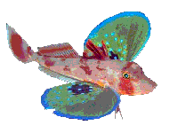
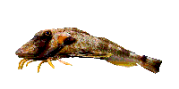
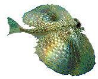
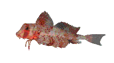
|
SEA ROBIN These guys can be identified by their leg-like fins that they can use to walk, or their colorful wings which they can use to fly. The amazing ATV! |
5 | O |
| 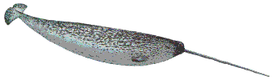 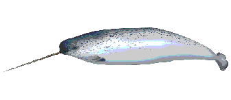 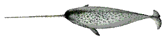 |
NARWHAL Do the other whales judge them for not wearing clothes? |
3 | R |
|
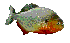
|
PIRANHA Jittery little fellows. |
3 | R |
|
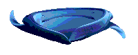
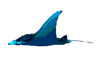
|
MANTA RAY | 2 | A |
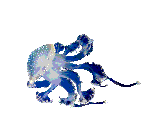
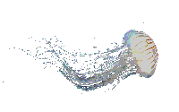
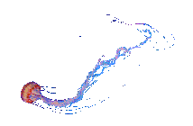

|
JELLYFISH | 3 jellyfish and 1 fish made of jelly | L |
| There were also some OTHER VISITORS that just happened to swim by at that moment. |
| IMAGE | NAME |
|---|---|
|
ROCK LOBSTER A rock lobster rocking on the bass. Another hint to the song. Rocks lobster are also known as crayfish, pronounced "xrayfish". |
|
|
|
BAKIN' POTATOES These reference another lyric in the song, and may also remind you of EXTREME POTATO COUNTER, which hints counting. |
| 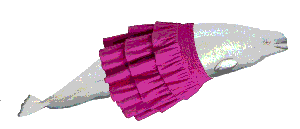 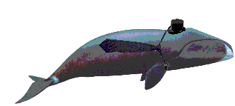 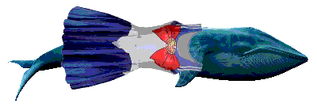 |
NON-BIKINI WHALES No, those are Skirt Beluga, Bowtie Bowhead, and Sailor Senshi Blue whale. |
|
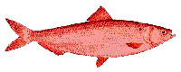
|
HERRING Happen to be red. |
visitors